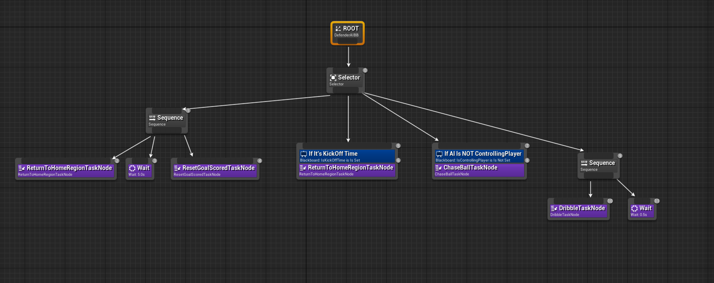
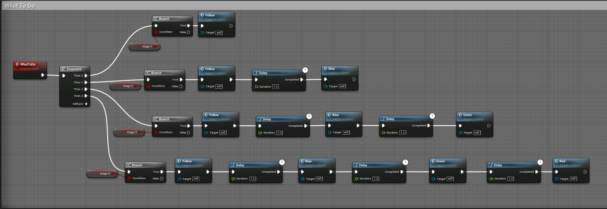
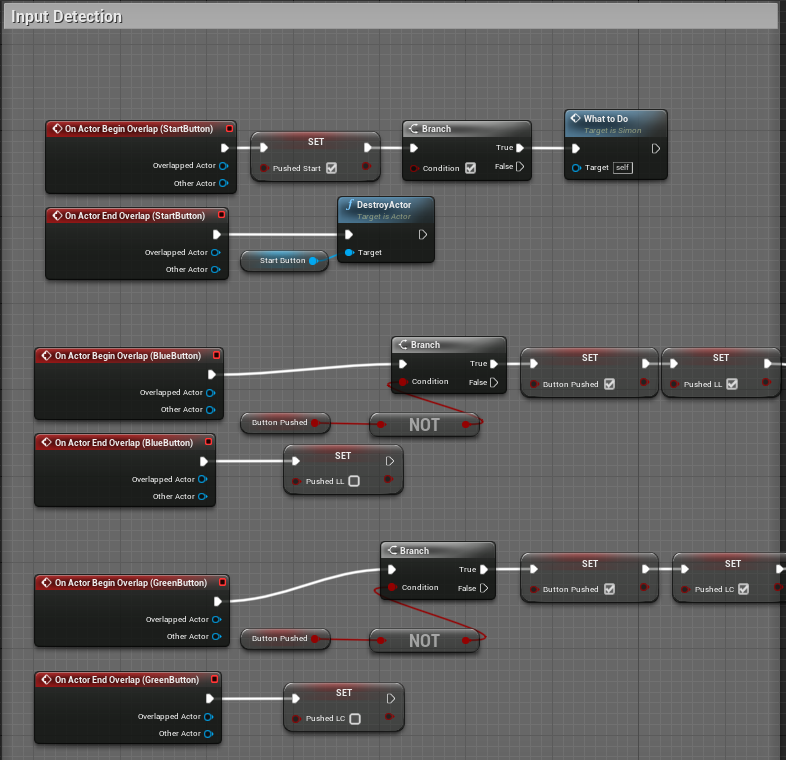

#include "AICharacter.h"
// Sets default values
AAICharacter::AAICharacter() {
// Set this character to call Tick() every frame. You can turn this off to improve performance if you don't need it.
PrimaryActorTick.bCanEverTick = true;
// Sets up trigger component
TriggerComponent = CreateDefaultSubobject<USphereComponent>(TEXT("TriggerComponent"));
TriggerComponent->AttachToComponent(RootComponent, FAttachmentTransformRules::KeepRelativeTransform);
// Sets up material components
RedTeamMaterial = CreateDefaultSubobject<UMaterial>(TEXT("RedTeamMaterial"));
BlueTeamMaterial = CreateDefaultSubobject<UMaterial>(TEXT("BlueTeamMaterial"));
}
// Called every frame
void AAICharacter::Tick(float DeltaTime) {
Super::Tick(DeltaTime);
heading = GetActorForwardVector();
}
// Called to bind functionality to input
void AAICharacter::SetupPlayerInputComponent(UInputComponent* PlayerInputComponent) {
Super::SetupPlayerInputComponent(PlayerInputComponent);
}
// Called when the game starts or when spawned
void AAICharacter::BeginPlay() {
Super::BeginPlay();
TriggerComponent->OnComponentBeginOverlap.AddDynamic(this, &AAICharacter::OnOverlapBegin);
}
// Returns if this character is the closest teammate to the ball
bool AAICharacter::isClosestTeamMemberToBall()
{
if (team)
{
return team->playerClosestToBall == this;
}
else
{
GEngine->AddOnScreenDebugMessage(-1, 15.0f, FColor::Red, TEXT("TEAM IS NULL IN AICHARACTER"));
return false;
}
}
// Returns if this character is controlling the ball
bool AAICharacter::isControllingPlayer()
{
if (team && IsDribble)
{
GEngine->AddOnScreenDebugMessage(-1, 5.f, FColor::Orange, FString::Printf(TEXT("Controlling Player has been set")));
return team->controllingPlayer == this;
}
else
{
//GEngine->AddOnScreenDebugMessage(-1, 15.0f, FColor::Red, TEXT("TEAM IS NULL IN AICHARACTER or IsDribble IS NOT TRUE"));
return false;
}
}
// Called when defender overlaps with another actor
void AAICharacter::OnOverlapBegin(class UPrimitiveComponent* OverlappedComp, class AActor* OtherActor, class UPrimitiveComponent* OtherComp, int32 OtherBodyIndex, bool bFromSweep, const FHitResult& SweepResult) {
// Casts the other actor to soccer ball
ASoccerBall* CollisionSoccerBall = Cast<ASoccerBall>(OtherActor);
// Checks if collided with soccer ball and not currently dribbling
if (CollisionSoccerBall && !IsDribble) {
// Sets the soccer ball pointer for player
SoccerBall = CollisionSoccerBall;
// Handles soccer ball dribbling
Dribble();
//TEST
GEngine->AddOnScreenDebugMessage(-1, 15.0f, FColor::Red, TEXT("IMMA DRIBBLE"));
}
}
// Called for player kick
void AAICharacter::Kick() {
// Only kicks the ball if in front of player
if (SoccerBall && IsDribble) {
// Lets go of the soccer ball
(SoccerBall->GetStaticMeshComponent())->SetSimulatePhysics(true);
(SoccerBall->GetStaticMeshComponent())->DetachFromComponent(FDetachmentTransformRules(EDetachmentRule::KeepRelative, false));
// Random vertical vector for lift
float LiftFactor = FMath::FRandRange(1.f, 2.f);
FVector LiftVector = FVector(0, 0, 7500 * LiftFactor);
// Creates vector for kick impulse
FVector KickVector = LiftVector + (GetActorForwardVector() * 20000);
// Applies impulse to soccer ball mesh
(SoccerBall->GetStaticMeshComponent())->AddImpulseAtLocation(KickVector, SoccerBall->GetActorLocation());
// Enables collision for soccer ball
(SoccerBall->GetStaticMeshComponent())->SetCollisionEnabled(ECollisionEnabled::QueryAndPhysics);
// No longer dribbling
IsDribble = false;
}
}
// Called for player pass
void AAICharacter::Pass() {
// Only passes the ball if in front of player
if (SoccerBall && IsDribble) {
// Lets go of the soccer ball
(SoccerBall->GetStaticMeshComponent())->SetSimulatePhysics(true);
(SoccerBall->GetStaticMeshComponent())->DetachFromComponent(FDetachmentTransformRules(EDetachmentRule::KeepRelative, false));
// Creates vector for pass impulse
FVector PassVector = GetActorForwardVector() * 17500;
// Applies impulse to soccer ball mesh
(SoccerBall->GetStaticMeshComponent())->AddImpulseAtLocation(PassVector, SoccerBall->GetActorLocation());
// Enables collision for soccer ball
(SoccerBall->GetStaticMeshComponent())->SetCollisionEnabled(ECollisionEnabled::QueryAndPhysics);
// No longer dribbling
IsDribble = false;
}
}
// Called when the play needs to dribble
void AAICharacter::Dribble() {
// Player is currently dribbling
IsDribble = true;
team->controllingPlayer = this;
// Snaps the soccer ball to the player's socket
(SoccerBall->GetStaticMeshComponent())->SetSimulatePhysics(false);
(SoccerBall->GetStaticMeshComponent())->SetCollisionEnabled(ECollisionEnabled::PhysicsOnly);
(SoccerBall->GetStaticMeshComponent())->AttachToComponent(GetMesh(), FAttachmentTransformRules(EAttachmentRule::SnapToTarget, true), TEXT("soccerBallSocket"));
}
FVector AAICharacter::Seek(FVector targetPos)
{
FVector desiredVelocity = (targetPos - GetActorLocation() * 10.0f);
desiredVelocity.Normalize();
return desiredVelocity - GetVelocity();
}
// Setter for the home region
void AAICharacter::SetHomeRegion(ARegions* NewHomeRegion) {
HomeRegion = NewHomeRegion;
}
Dani Amir
Welcome to my website!
GitHub Projects Contact Information ResumeAbout me
Hi, my name is Dani Amir and I am a Computer Science major at the University of Texas at Austin. I love programming and I want to be at the forefront of emerging cutting-edge technology. I am passionate about building apps and have a high interest in game design and development. Some of my favorite games are Skyrim, Halo 3, The Forest, Call of Duty Black Ops, and Star Wars Battlefront 2.
Projects
Soccer Simulation - C++/Unreal Engine 4
- A 5 vs 5 soccer game developed using Unreal Engine 4
- Designed and implemented an AI class for the players on the pitch
- Implemented behaviors such as dribbling, chasing the ball, and returning to home positions in C++
- Used behavior trees to execute certain tasks based on conditions on the soccer pitch
Code Snippets
#include "SoccerPitch.h"
#include "DefenderAIController.h"
#include "AICharacter.h"
#include "ChaseBallTaskNode.h"
EBTNodeResult::Type UChaseBallTaskNode::ExecuteTask(UBehaviorTreeComponent& OwnerComponent, uint8* NodeMemory) {
// Getting the AI controller
ADefenderAIController* AIController = Cast<ADefenderAIController>(OwnerComponent.GetAIOwner());
if (AIController) {
// Getting the soccer pitch and the AI character
ASoccerPitch* SoccerPitch = AIController->GetSoccerPitch();
AAICharacter* DefenderAI = AIController->GetAICharacter();
if (SoccerPitch && DefenderAI) {
// Check if this AI is the closest Team Member to the Ball, if it is, pursue the ball
if (DefenderAI->isClosestTeamMemberToBall())
{
AIController->MoveToLocation(DefenderAI->team->pitch->ball->GetActorLocation());
//GEngine->AddOnScreenDebugMessage(-1, 5.f, FColor::Orange, FString::Printf(TEXT("Closest Player is: %d"), DefenderAI->playerID));
}
}
// The task succeeded
return EBTNodeResult::Failed;
}
// The task failed
return EBTNodeResult::Succeeded;
}

Gameplay
VR Simon Says - Blueprints/Unreal Engine 4
- VR Simon Says game developed using Unreal Engine 4
- Developed and designed a crowd simulation using Niagra and animations
- Implemented gameplay functionality such as interacting with buttons, advancing in rounds, winning state, and losing state using Blueprints
Code Snippets



Gameplay
Wipeout - C++/Godot
- A game developed using the Godot engine where the player must get through an obstacle course and reach the trophy at the end to win
- Designed and created an obstacle course in Godot with 4 different obstacles
- Implemented scripts in C++ to animate the obstacle course and detect when the player has won
- Designed and implemented a networked multiplayer system that supports up to 2 players
Code Snippets
#include "trophy.h"
#include <SceneTree.hpp>
using namespace godot;
void Trophy::_register_methods() {
register_method("_area_entered", &Trophy::_area_entered);
register_method("_ready", &Trophy::_ready);
}
void Trophy::_init() {
start = 0;
}
// Constructor for Trophy Object
Trophy::Trophy() {
}
// Destructor for Trophy Object
Trophy::~Trophy() {
}
// Intializer for the Trophy class
void Trophy::_ready()
{
audioNode = get_node("VictorySoundPlayer");
areaNode = get_node("Area");
area = godot::Object::cast_to<Area>(areaNode);
audioPlayer = godot::Object::cast_to<AudioStreamPlayer>(audioNode);
// Connects area object with body_entered signal
area->connect("body_entered", this, "_area_entered");
}
// Function that triggers once the Trophy's area is entered
void Trophy::_area_entered() {
Godot::print("CollisionDetected");
// Plays the audio only on the first collision
if (start == 1)
{
if (audioPlayer)
{
audioPlayer->play();
}
// Change the scene to the game over scene
get_tree()->change_scene("res://main_scenes/GameoverScreen.tscn");
}
start += 1;
}
void GameManager::_host_start() {
// Creates and sets the server
network = NetworkedMultiplayerENet::_new();
network->create_server(port, max_players);
get_tree()->set_network_peer(network);
// Connects network signals to defined functions
network->connect("peer_connected", this, "_player_connected");
network->connect("peer_disconnected", this, "_player_disconnected");
// Stores clients name with network ID in the dictionary
local_player_id = get_tree()->get_network_unique_id();
player_names[0] = current_player_name;
//TEST Print statement
Godot::print("Server started!");
}
void GameManager::_player_connected(int player_id) {
Godot::print("Player connected!");
}
void GameManager::_player_disconnected(int player_id) {
Godot::print("Player disconnected!");
Node* player2 = get_tree()->get_root()->get_node("Player2");
if (player2)
{
get_tree()->get_root()->remove_child(player2);
}
else
{
Godot::print("Player2 node is null in game manager");
}
}
void GameManager::_send_player_info(int client_id, String client_name) {
player_names[1] = client_name;
rpc("_update_player_names", player_names[0], player_names[1]);
rpc("_update_waiting_room");
}
void GameManager::_client_start() {
// Creates and sets the client
network = NetworkedMultiplayerENet::_new();
network->create_client("127.0.0.1", port);
get_tree()->set_network_peer(network);
player_ids[1] = get_tree()->get_network_unique_id();
// Connects network signals to defined functions
get_tree()->connect("connection_failed", this, "_connected_fail");
get_tree()->connect("server_disconnected", this, "_server_disconnected");
get_tree()->connect("connected_to_server", this, "_connected_ok");
//TEST Print statement
Godot::print("...Attempting to join server...");
}
Gameplay
Contact Information
- Email: daniamir2001@yahoo.com
- LinkedIn: https://www.linkedin.com/in/dani-amir/